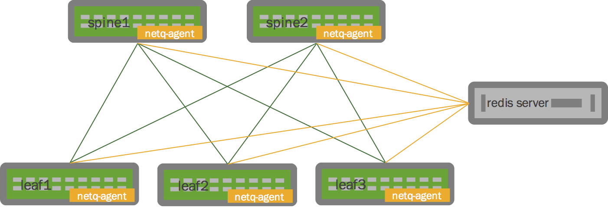

Using netq to Troubleshoot the Network
Early Access Feature
netq is an early access feature in Cumulus Linux 3.2.1. Before you can install netq, you must enable the Early Access repository. For more information about the Cumulus Linux repository, read this knowledge base article.
netq is a tool for troubleshooting the whole network fabric. Instead of using other tools to troubleshoot node by node, netq aggregates data from across all the nodes in a network, so you can query and diagnose issues affecting the whole network, analyze outages or discover why two or more switches cannot communicate. netq can return a wealth of data about your network for both layer 2 and the layer 3 IP fabric, including:
-
Interface history
-
MLAG checks
-
Anycast IP validation
-
Interface address history
-
IP neighbor history
-
MTU validation of traceroutes
-
Route history
-
Route origin validation
-
Support for VRF analysis and commands
netq provides the ability to see the output of commands on other switches, even if a switch is currently unavailable. You can even see the command history so you can go back in time before the issue arouse to debug it.
Because netq is a Linux application, it's easy to automate with tools like Ansible, Puppet or Chef.
Contents
Components
netq has three primary components:
-
netq-agent: The back end Python agent installed on every Cumulus Linux switch in the network; the agent pushes out data to a central server (a redis server, see below) periodically and when specific netlink events occur. The redis server processes the queries and sends back a response to the switch. The agent listens for these events:
-
address (IPv4 and IPv6)
-
route (IPv4 and IPv6)
-
link
-
bridge fdb
-
IP neighbor
-
-
netq: The command line interface to the netq-agent. You can use the netq CLI on every Cumulus Linux switch as well as the redis server.
-
redis server: The database/key-value store where all network information sent from netq-agents running on Cumulus Linux switches is collected and aggregated. The server runs redis version 2.8.17-1.

Feature Limitations
netq is an early access feature. As such, the following features are limited or unavailable at this time, and should be available in a future release of Cumulus Linux:
-
You can check BGP health only at this time; reporting OSPF health should follow in the near future.
-
You cannot determine the origin of static routes.
-
Clustering the redis server for high availability has not been tested.
-
netq has been tested with up to 20 nodes in a fabric, with 8k routes and MAC addresses per node.
If you are interested in trying out this or any other early access feature, contact your Cumulus Networks account representative to let us know you are testing it.
Installing netq
To install the netq package — cumulus-netq — on a switch, follow the instructions below. The cumulus-netq package contains netq and the netq-agent. Cumulus Networks recommends you install the netq-agent on every Cumulus Linux switch in the network; you can also install it on the redis server.
-
Open the /etc/apt/sources.list file in a text editor.
-
Uncomment the early access repository lines and save the file:
deb http://repo3.cumulusnetworks.com/repo CumulusLinux-3-early-access cumulusdeb-src http://repo3.cumulusnetworks.com/repo CumulusLinux-3-early-access cumulus -
Run the following commands in a terminal to install the cumulus-netq package:
cumulus@switch:~$ sudo apt-get updatecumulus@switch:~$ sudo apt-get install cumulus-netq
Installing redis Server
Cumulus Networks recommends you install the redis server on its own server or VM. Ideally, you should run the redis server on a separate, powerful server for maximum usability and performance — Cumulus Networks recommends a system with a quad core CPU, 16GB of RAM (with 8GB for redis itself) and 512GB of storage.
You need to download and install two packages:
-
The redis-server package, version 2.8.17-1.
-
The redis-tools package, version 2.8.17-1.
Use apt-get to install the packages:
root@redis-server:~# apt-get updateroot@redis-server:~# apt-get install redis-server redis-toolsAfter you install these packages, connect the server over the management network to ensure network connectivity even if the in-band network is unavailable. Note its IP address, as you need to specify it when you configure netq.
If you want to run the netq CLI on the redis server, you need to install the cumulus-netq package on the server. You'll need to update your sources.list file to include the Cumulus Linux repository. The cumulus-netq package contains the netq client, which contains the CLI.
You cannot specify a port number for the redis server at this time.
Once you install the redis server, you must configure it before you can configure netq on the switch.
Configuring the redis Server
Depending upon the operating system of the redis server host, you may need to modify its configuration before it can start monitoring the network. Check the /etc/redis/redis.conf file and verify that the server is listening to external-facing ports, and not the localhost.
-
Edit /etc/redis/redis.conf:
root@redis-server:~# vi /etc/redis/redis.conf -
If the bind line links to localhost (127.0.0.1), change it to the IP address of one or more external ports, such as eth0:
bind 192.0.2.240 -
Restart the redis-server service. For example, on a Debian host, run:
root@redis-server:~# systemctl restart redis-server
Configuring netq
Once you install the netq packages and configure the redis server, you need to configure netq to monitor your network.
-
To ensure useful output, ensure that NTP is running.
-
Specify the IP address of the redis server. For example:
cumulus@switch:~$ sudo netq add server 198.51.100.1 -
Start the netq agent.
cumulus@switch:~$ sudo netq agent startIf you see the following error, it means you haven't added the redis server or the server wasn't configured:
cumulus@switch:~$ sudo netq agent startError: Please specify IP address of DB server
The netq configuration is stored in the following files:
-
/etc/netq/netq-agent.conf: Contains basic agent configuration, including the redis server IP address.
-
/etc/netq/netq-agent-commands.json: Contains key-value pairs of commands whose outputs are pushed along with the key to be associated, periodicity of push and so forth.
-
/etc/netq/netq-agent-running.json: Log of the actual commands that are being pushed to the agent, as determined when the agent starts, as well as the redis server IP address and more.
Configuring NetQ in Management VRF
To configure NetQ in the management VRF, after you configure the management VRF, start the netq service as followed:
cumulus@switch:mgmt-vrf:~$ sudo systemctl start netq-agent@mgmt.serviceOnly one instance of netq-agent can run at a time. If the netq-agent@mgmt.service has not been started, check if the default netq-agent.service is running. If it is, stop the default service.
cumulus@switch:mgmt-vrf:~$ sudo systemctl stop netq-agentUsing netq
netq has a number of options to use with the command to return various kinds of data about your network — press the Tab key at any time to reveal the options available to a given part of the command. Running netq on its own reveals all the options, with a brief explanation for each one:
cumulus@switch:~$ netq <TAB>add : Update configurationagent : Netq agentcheck : check health of services or correctness of parameterhelp : Show usage inforesolve : Annotate input with names and interesting infoserver : IP address of DB servershow : Show fabric-wide infotrace : Control plane trace path across fabricview : Show output of pre-defined commands on specific nodeChecking the Health of the Network
It's best to start with netq check agents to see the status of every network node, based on the whether the agent missed receiving any heartbeats sent from the node. A node's status can be one of the following:
-
Fresh: The agent is running fine, no heartbeats were missed.
-
Stale: The agent missed one heartbeat, which is not unusual.
-
Rotten: The agent missed five consecutive heartbeats.
cumulus@switch:~$ sudo netq check agentsNode Name Connect Time Last Connect Status----------- ------------------- -------------- --------leaf-1 2017-02-09 21:44:34 7s ago Freshleaf-2 2017-02-09 21:44:39 just now Freshleafc-11 2017-02-09 21:44:12 29s ago Freshleafc-12 2017-02-09 21:44:18 23s ago Freshleafc-21 2017-02-09 21:44:23 18s ago Freshleafc-22 2017-02-09 21:44:29 11s ago Freshnoc-pr 2017-02-09 21:43:50 19s ago Freshnoc-se 2017-02-09 21:43:56 15s ago Freshspine-1 2017-02-09 21:44:01 9s ago Freshspine-2 2017-02-09 21:44:07 4s ago FreshYou can also check the health of BGP and MLAG in the network:
cumulus@leaf-1:~$ netq check bgpTotal Sessions: 28, Failed Sessions: 0cumulus@leaf-1$ netq check clagChecked Nodes: 5, Failed Nodes: 1Node Reason---------------- ----------------------------------------------------------------leafc-11 Peer Connectivity failedleafc-11 Singly Attached Bonds: hostbond4, hostbond5Using netq show
The netq show command can return information regarding the network fabric overall, including:
-
Interface IP and MAC addresses across all nodes in the fabric.
-
Interfaces across all nodes in the fabric.
-
IPv4 and IPv6-related information.
-
LLDP-based neighbor information.
-
MAC address information, with VLANs if present, across the fabric.
The netq show command takes the following options:
cumulus@switch:~$ netq show <TAB>bgp : Check the status of all the BGP sessions across the fabricchanges : Show changes in interface/mac/route/neighbor state between specified timesclag : Check the status of all the CLAG daemons across the fabricinterfaces : Interfaces across all nodes in fabricinventory : add help textip : IPv4 related infoipv6 : IPv6 related infolldp : LLDP based neighbor infomacs : Show mac address info, with optional VLAN, across the fabricservices : Show various system servicesstp : Spanning Treetop_talkers : Top interface talkers in fabricTo see the hardware information for all the nodes across the fabric, run:
cumulus@switch:~$ netq show inventoryNode Switch OS CPU ASIC Ports------------- -------------- ------------- ------ -------- --------------------------------dell-z9100-05 Z9100-ON Cumulus Linux x86_64 Tomahawk 32 x 100G-QSFP28mlx-2100-05 SN2100 Cumulus Linux x86_64 Spectrum 16 x 100G-QSFP28mlx-2410-03 SN2410 Cumulus Linux x86_64 Spectrum 48 x 25G-SFP28 & 8 x 100G-QSFP28mlx-2700-11 SN2700 Cumulus Linux x86_64 Spectrum 32 x 100G-QSFP28st1-l1 Arctica 4806XP Cumulus Linux x86_64 Trident2 48 x 10G-SFP+ & 6 x 40G-QSFP+st1-l2 Arctica 4806XP Cumulus Linux x86_64 Trident2 48 x 10G-SFP+ & 6 x 40G-QSFP+st1-l3 Arctica 4806XP Cumulus Linux x86_64 Trident2 48 x 10G-SFP+ & 6 x 40G-QSFP+st1-s1 S6000-ON Cumulus Linux x86_64 Trident2 32 x 40G-QSFP+st1-s2 S6000-ON Cumulus Linux x86_64 Trident2 32 x 40G-QSFP+To see MAC address information for switch leaf-1, run:
cumulus@leaf-1:~$ netq show macs leaf-1MAC VLAN Node Name Egress Port Origin Last Changed-------------------- -------- ---------------- ---------------- ------ ----------------00:02:00:00:00:16 100 leaf-1 VlanA-1 1 4m ago00:02:00:00:00:16 101 leaf-1 VlanA-1 1 4m ago00:02:00:00:00:16 102 leaf-1 VlanA-1 1 4m ago00:02:00:00:00:16 103 leaf-1 VlanA-1 1 4m ago00:02:00:00:00:16 104 leaf-1 VlanA-1 1 4m ago00:02:00:00:00:16 105 leaf-1 VlanA-1 1 4m ago00:02:00:00:00:16 106 leaf-1 VlanA-1 1 4m ago00:02:00:00:00:16 Intf leaf-1 hostbond3 1 4m ago00:02:00:00:00:18 Intf leaf-1 hostbond4 1 4m ago02:02:00:00:00:09 100 leaf-1 hostbond3 1 4m agoYou can filter the output to a given interface on a switch, in this case hostbond4 on leaf-1:
cumulus@spine-1:~$ netq show macs leaf-1 nexthop hostbond4MAC VLAN Node Name Egress Port Origin Last Changed-------------------- -------- ---------------- ---------------- ------ ----------------00:02:00:00:00:18 Intf leaf-1 hostbond4 1 7m ago02:02:00:00:00:0b 100 leaf-1 hostbond4 1 7m ago02:02:00:00:00:0c 100 leaf-1 hostbond4 1 7m agoTo see the route information, run:
cumulus@switch:~$ netq show ip route 3.0.3.3Route info about prefix 3.0.3.3 on host *Origin Table IP Node Nexthops Last Changed------ ---------------- ---------------- ---------------- -------------------------- ----------------0 default 0.0.0.0/0 noc-pr 192.168.0.2: eth0 11m ago0 default 0.0.0.0/0 noc-se 192.168.0.2: eth0 11m ago0 default 3.0.3.0/26 leaf-1 169.254.0.1: uplink-1, 10m ago 169.254.0.1: uplink-20 default 3.0.3.0/26 leaf-2 169.254.0.1: uplink-1, 10m ago 169.254.0.1: uplink-20 default 3.0.3.0/26 leafc-11 169.254.0.1: uplink-1, 10m ago 169.254.0.1: uplink-20 default 3.0.3.0/26 leafc-12 169.254.0.1: uplink-1, 5m ago 169.254.0.1: uplink-20 default 3.0.3.0/26 spine-1 169.254.0.1: downlink-3, 10m ago 169.254.0.1: downlink-40 default 3.0.3.0/26 spine-2 169.254.0.1: downlink-3, 10m ago 169.254.0.1: downlink-41 default 3.0.3.0/26 leafc-21 VlanA-1.105 10m ago1 default 3.0.3.3/32 leafc-22 VlanA-1.105 10m agoTo view the routes originated from a VRF on specific node, run:
cumulus@leaf-1$ netq show ip route leafc-11 vrf DataVrf1080 originRoute info about prefix * on host leafc-11Origin Table IP Node Nexthops Last Changed------ ---------------- ---------------- ---------------- -------------------------- ----------------1 DataVrf1080 3.0.0.0/26 leafc-11 VlanA-1-100-v0 10m ago1 DataVrf1080 3.0.0.0/32 leafc-11 VlanA-1-100-v0 10m ago1 DataVrf1080 3.0.0.1/32 leafc-11 VlanA-1-100-v0 10m ago1 DataVrf1080 3.0.0.2/32 leafc-11 VlanA-1.100 10m ago1 DataVrf1080 3.0.0.63/32 leafc-11 VlanA-1.100 10m ago1 DataVrf1080 30.0.0.15/32 leafc-11 DataVrf1080 10m agoThe VRR IPv6 link local address is not displayed when you run netq show ipv6 address. netq only displays the SVI link local address.
cumulus@switch:~$ netq show ipv6 address qct-ly8-05 | egrep "VlanA-1-101|VlanA-1.101"2001:fee1:0:1::1/64 switch VlanA-1-101.VRR DataVrf1081 9h ago2001:fee1:0:1::2/64 switch VlanA-1.101 DataVrf1081 9h agofe80::848:b1ff:fe22:7084/64 switch VlanA-1.101 DataVrf1081 9h agoUsing netq view
The netq view command provides information about a specific node in the network. The available options are:
cumulus@leaf-1:~$ netq view leaf-2config : add help textcounters : add help textipv4 : add help textkeys : add help textlldp : LLDP based neighbor infomeminfo : add help texttop : add help textuptime : add help textFor example, to see the top output on leaf-2, run:
cumulus@leaf-1:~$ netq view leaf-2 top Output retrieved from 48s agotop - 21:57:08 up 13 min, 0 users, load average: 0.04, 0.07, 0.03Tasks: 89 total, 1 running, 88 sleeping, 0 stopped, 0 zombie%Cpu(s): 2.0 us, 1.6 sy, 0.0 ni, 96.3 id, 0.0 wa, 0.0 hi, 0.0 si, 0.0 stKiB Mem: 1981988 total, 317784 used, 1664204 free, 4124 buffersKiB Swap: 0 total, 0 used, 0 free. 92300 cached Mem PID USER PR NI VIRT RES SHR S %CPU %MEM TIME+ COMMAND 1220 root 20 0 163100 121108 6572 S 0.0 6.1 0:02.88 python 2808 root 20 0 66620 20972 6956 S 6.5 1.1 0:07.97 netq-agent 1225 root 20 0 265292 14372 6000 S 0.0 0.7 0:06.67 arp_refresh 1223 root 20 0 42240 12212 5984 S 0.0 0.6 0:00.22 python 1051 root 20 0 32604 9384 4260 S 0.0 0.5 0:00.04 pwmd 1049 root 20 0 32628 9368 4236 S 0.0 0.5 0:00.06 smond 1393 root 20 0 104464 7800 4532 S 0.0 0.4 0:02.02 arp_nhs 1390 root 20 0 104212 7564 4564 S 0.0 0.4 0:00.67 python 1 root 20 0 112492 6844 2980 S 0.0 0.3 0:04.17 systemd 1391 root 20 0 24632 6476 3436 S 0.0 0.3 0:00.11 ts 1837 quagga 15 -5 48540 5940 3180 S 0.0 0.3 0:00.77 bgpdMonitoring the redis Server
You can use the redis-cli info command to determine how much memory is consumed by the redis server, how many connections there are, and so forth.
Two recommended commands to use are redis-cli info and redis-cli ping .
Specifying a Different redis Server
If you need to change the IP address of the redis server, run netq add server again, specifying the IP address of the new server, then restart the netq agent. For example:
cumulus@switch:~$ sudo netq add 198.51.100.10cumulus@switch:~$ sudo netq agent restartNote that you need to specify this for every switch that you're monitoring with netq. Cumulus Networks recommends you use an automation tool like Ansible or Puppet to quickly update the server across all switches.
Troubleshooting netq
netq agent logs to /var/log/netq-agent.log. The logs are logrotated.
To ensure that the netq agent is running, run:
cumulus@switch:~$ netq agent statusRunning...